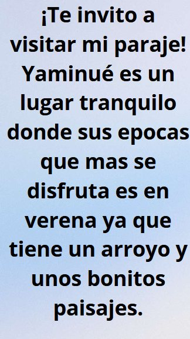

¿Qué hace especial al paraje de Yaminué?
Yaminué es un lugar tranquilo. Su época en la que más se disfruta es el verano, ya que tiene un arroyo y unos bonitos paisajes.


¡Te invito a visitar mi paraje!
TERRITORIO
Un lugar tranquilo con un arroyo y paisajes que se disfrutan en verano.
¿Qué hace especial al paraje de Yaminué?
Yaminué es un lugar tranquilo. Su época en la que más se disfruta es el verano, ya que tiene un arroyo y unos bonitos paisajes.

¡Te invito a visitar mi paraje!